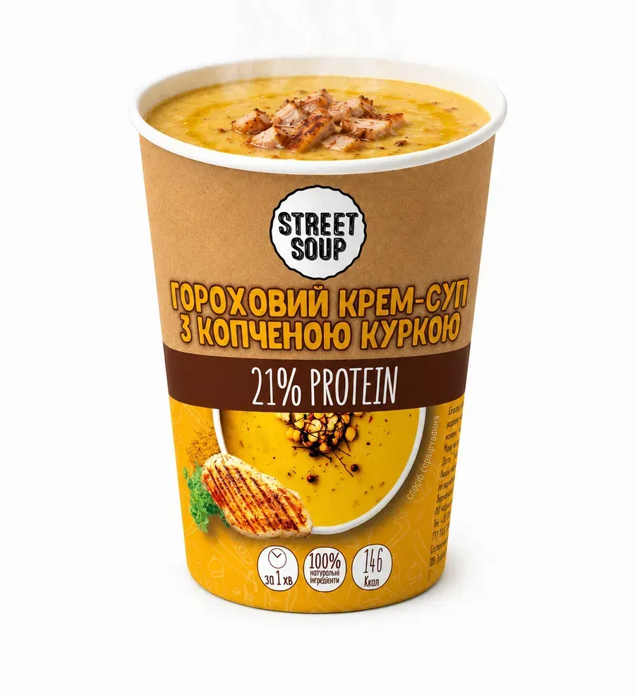

ХітКрем-суп гороховий з копченою куркою, 50 г
35,69грн
1 порція = 300 г готового супу
- 10,8 гбілка на 50 г сухого
- 146ккал на 50 г сухого
- 1 хвдо готовності
Склад: пюре горохове (92%), сіль морська, куряче філе варено-копчене (1,8%), спеції. Без лактози, без цукру, без горіхів. Може містити сліди глютену. Повний склад
Потрібно більше? Набір ALL SOUP: 13 стаканів, 34,48 грн за порцію
Підходить для
Підходить для подорожей, трекінгу й хайкінгу, відключення світла та випадків, коли немає часу готувати.
- 299 грн мінімальне замовлення
- від 3 500 грн безкоштовна доставка Новою поштою до відділення, від 2 500 грн Укрпоштою
- Самовивіз зі складу в Чернігові безкоштовно
Як це готується
- 1
Відкрийте
Зніміть кришку зі стакана.
- 2
Залийте водою
Долийте 250 г гарячої води до лінії.
- 3
Перемішайте
Перемішайте паличкою зі стакана: за 1 хвилину суп готовий.
Натуральний крем-суп у паперовому стакані
Гороховий крем-суп із куркою (у складі копчене куряче філе): відкрийте стакан, додайте 250 г (1 склянку) гарячої води й перемішайте паличкою зі стакана. 1 стакан дає 300 г готового супу.
Зручно, коли відключають електроенергію: достатньо гарячої води з термоса. Підходить для подорожей, трекінгу, офісу й дому.
Склад і поживна цінність
Пюре горохове сухе (92,0%), сіль морська, філе куряче варено-копчене сублімоване шматочки (1,8%), карі, цибуля сушена мелена, часник сушений, кріп сушений, перець чілі пластівці сушені. Може містити сліди глютену.
| Білки | 10,8 г |
|---|---|
| Жири | 0,6 г, з них насичені 0,1 г |
| Вуглеводи | 24,6 г, з них цукри 1,5 г |
| Сіль | 2,0 г |
| Енергетична цінність | 146 ккал |
Характеристики
| Тип страви | Крем-суп |
|---|---|
| Вид | Солоні |
| Смак | Курка |
| Вміст білка | 15–22% |
| Харчування | З м'ясом |
| Основа страви | Бобові |
| Особливості | Без лактози, без цукру, без горіхів |
| Вид пакування | Стакан |
| Спосіб і час приготування | Залити окропом на 1 хвилину |
| Термін придатності | 16 місяців |
Доставка, оплата, повернення
- Мінімальне замовлення 299 грн. Доставка до відділення безкоштовна: Новою поштою від 3 500 грн, Укрпоштою від 2 500 грн.
- Замовлення відправляємо по буднях. Підтверджені до 21:00 передаємо службі доставки наступного робочого дня, після 21:00 через один робочий день.
- Оплата: картка Visa/Mastercard, рахунок Приватбанку або Монобанку, при отриманні з передоплатою 200 грн, безготівково для ФОП і юросіб.
- Продовольчі товари належної якості обміну й поверненню не підлягають. Під час отримання огляньте упаковку й комплектність. Якість товару регулює стаття 8 Закону «Про захист прав споживачів».
Відгуки про суп · 19
Усі відгуки на сайтіДуууууже смачний суп. Курочка копчена відчувається і посилює смак
Дуже смачний суп, не очікувала на таку якість і гарний смак. Дякую виробнику. Також хотіла подякувати менеджеру мого замовлення, купувала в поїздку, часу було мало - все швидко відправили, отримала вчасно.
Не люблю горохові супи, але це топ! Смачно, ситно, корисно!